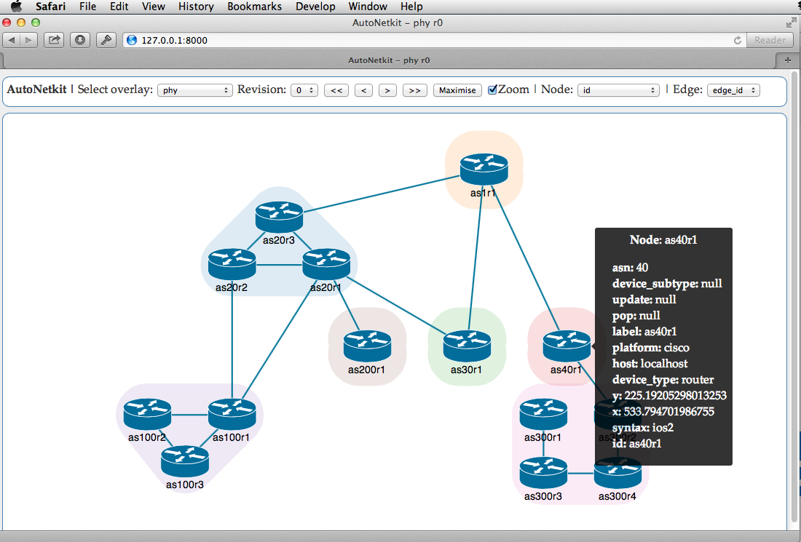

Features
Explore the features of AutoNetkit.
Visual Capture
Draw your network in a visual tool such as yEd. AutoNetkit supports the GraphML input format.
Built on Abstract Model
AutoNetkit builds on our research work into abstract network representations, providing a formal and flexible approach to network design.
Design Network Services
Design your network using Python syntax.
for asn, devices in G_phy.groupby("asn").items():
routers = [d for d in devices if d.is_router]
ibgp_edges = [ (s, t) for s in routers for t in routers if s!=t]
G_bgp.add_edges_from(ibgp_edges, type = 'ibgp')
G_bgp = anm.add_overlay("bgp", directed = True)
G_bgp.add_nodes_from(G_in.nodes("is_router"))
ebgp_edges = [edge for edge in G_in.edges() if edge.src.asn != edge.dst.asn]
G_bgp.add_edges_from(ebgp_edges, bidirectional = True, type = 'ebgp')
Plain-Text Templates
Generate configuration files with plain-text templates: easy to add new features and extend to new device types, and no complex XSLT to learn.
hostname ${node}
password ${node.zebra.password}
banner motd file /etc/quagga/motd.txt
!
% for interface in node.interfaces:
interface ${interface.id}
#Link ${interface.description}
ip ospf cost ${interface.ospf_cost}
!
%endfor
!
% if node.ospf:
router ospf
% for ospf_link in node.ospf.ospf_links:
network ${ospf_link.network.cidr} area ${ospf_link.area}
% endfor
% endif
hostname 1a.1 password 1234 banner motd file /etc/quagga/motd.txt ! interface eth0 #Link to 1a.1 to 1b.1 ip ospf cost 1 ! interface eth1 #Link to 1a.1 to 1c.1 ip ospf cost 1 ! ! router ospf network 10.0.0.0/30 area 0 network 10.0.0.4/30 area 0 !
Directory-Based templates
Use complex directory structures as template patterns. Plain-text templates can be placed in directory trees, ideal for Linux service configuration.
quagga/
└── etc
├── hostname
├── hostname.mako
├── ssh
│ └── sshd_config
└── zebra
├── bgp.conf.mako
├── motd.txt.mako
├── ospf.conf.mako
├── zebra.conf.mako
└── zebra_daemons.conf.mako
├── 1a.1 │ └── etc │ ├── hostname │ ├── ssh │ │ └── sshd_config │ └── zebra │ ├── bgp.conf │ ├── motd.txt │ ├── ospf.conf │ ├── zebra.conf │ └── zebra_daemons.conf ├── 1a_1.startup
Automated Resource Allocation
Automatically allocate network resources such as IP addresses.
Visual Feedback
Real-time feedback of network designs using the D3 visualization library, requiring only a web browser.

Automated Deployment
Automated deployment using Exscript.
Topology Zoo Integration
AutoNetkit works with network topologies from our Internet Topology Zoo Project. Simply download a network in GraphML format and run AutoNetkit.
$ autonetkit -f Geant2012.graphml

Open Source
AutoNetkit is available on Github under a BSD licence, and builds on Python projects including NetworkX, Mako, Netaddr, Exscript and TextFSM.